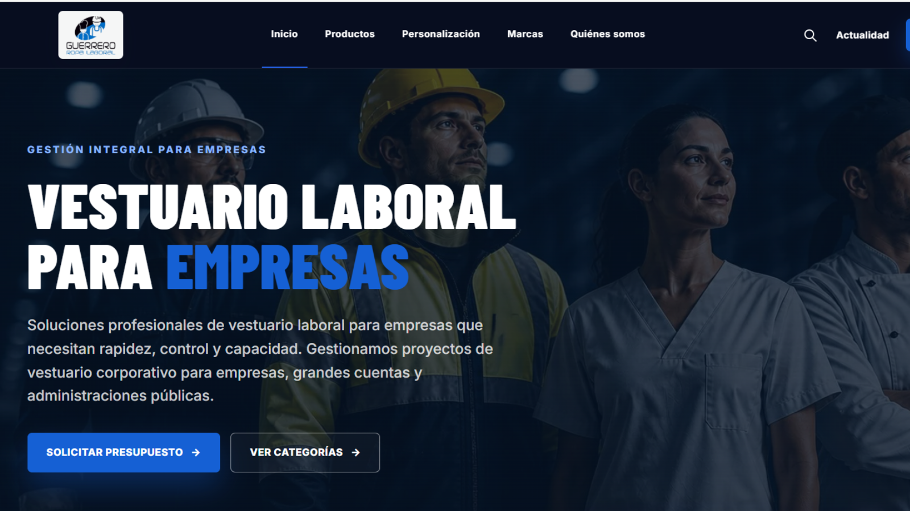
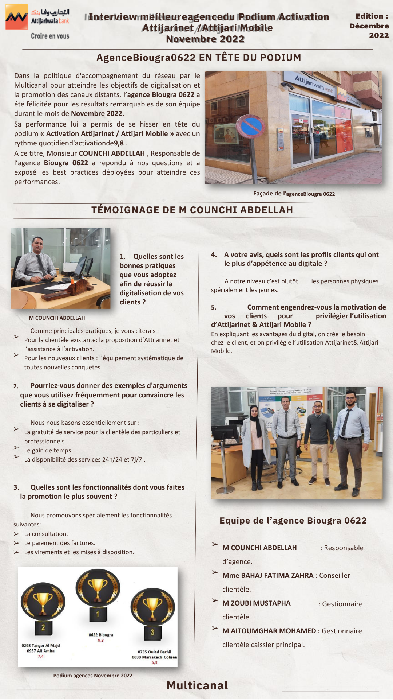
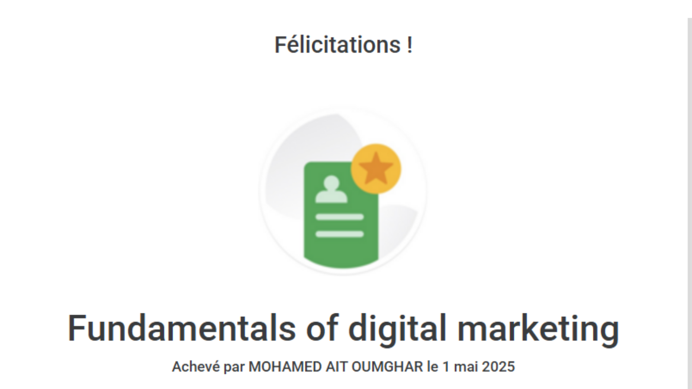
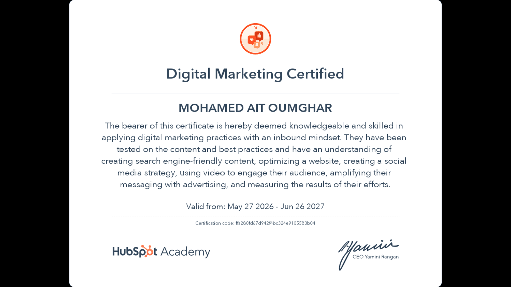
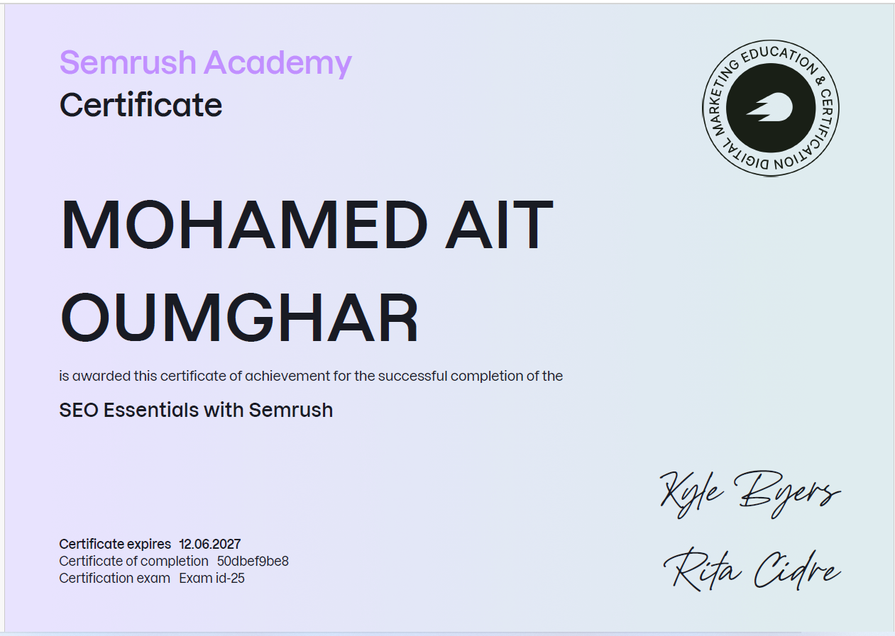

Clients Managed
Toledo, Spain
Open to opportunities
I build digital visibility that turns into real business growth.
SEO strategist, WordPress builder, and B2B marketer helping companies become easier to find, trust, and choose.
SEO
WordPress
Search Console
HubSpot
Canva
AI Workflows
Years Client Management
SEO Keywords Mapped
Languages
SEO Articles Produced
Digitalization Award
02 About me
Business instinct.
Digital precision.
Before becoming a digital marketer, I spent more than five years managing client portfolios in banking.
That experience shaped the way I approach marketing today: strategy first, results always. Now I combine SEO, WordPress, content, local visibility, and B2B lead generation to help companies grow online.
Arabic
French
English
Spanish
03 Selected work
Projects built around measurable growth.
Strategy, implementation, and content work focused on making B2B brands easier to find, trust, and choose.

NODE_01B2B Marketing / SEO / WordPress
Ropa Laboral Guerrero Digital Growth
Managed the digital growth of a B2B workwear and PPE company in Toledo, including website optimization, SEO strategy, Google Business Profile, social media, and content workflows.
Featured project
NODE_02
SEO Strategy
SEO Roadmap: 146 Keywords
Built a structured keyword strategy targeting Toledo, Castilla-La Mancha, and Madrid, organized by search intent and funnel stage.
Featured project
NODE_03
Internal Tool / Marketing Operations
RLG Manager SaaS
Built an internal marketing management app concept for SEO tracking, content planning, competitor analysis, and AI-assisted workflows.
Featured project
NODE_04
Content Marketing / B2B Trust
PPE Regulatory Blog Series
Created regulatory content around Spanish and EU PPE rules to support SEO visibility and build trust with B2B buyers.
Featured project
NODE_05Business / Digital Transformation
Banking Digitalization Award
Led digitalization initiatives during my banking career, contributing to a 1st place national result across 3,407 branches.
Featured project04 Core stack
Four connected systems.
One growth mindset.
A practical mix of strategy, implementation, and tools built around the full digital customer journey.
01
SEO & Visibility
- SEO Strategy
- Search Console
- Google Business Profile
02
Website Creation
- WordPress
- Elementor
- HTML / CSS
03
B2B Growth
- Lead Generation
- Content Marketing
- HubSpot
04
AI Marketing Ops
- AI Workflows
- Content Systems
- Marketing Automation
05 Experience
A career shaped by people and performance.
ROLE_01
Digital Marketing Specialist
Ropa Laboral Guerrero
- Built a 146-keyword SEO roadmap around commercial and local search intent.
- Improved website, content, social, and Google Business Profile workflows.
- Connected digital visibility with practical B2B lead generation.
ROLE_02
Account Manager
Attijariwafa Bank
- Managed a portfolio of more than 500 individual and business clients.
- Structured financing applications and long-term commercial relationships.
- Contributed to a first-place national digitalization result across 3,407 branches.
06 Certifications
Always learning.
Always applying.

Fundamentals of Digital Marketing

HubSpot Academy
Digital Marketing Certified

Semrush Academy
SEO Essentials with Semrush
Expires: 12.06.202707 Start a conversation
Have a growth challenge?
Let's solve it.
I'm open to opportunities in digital marketing, SEO, WordPress, content strategy, and B2B growth.
mohamed.aitoumghar@yahoo.com